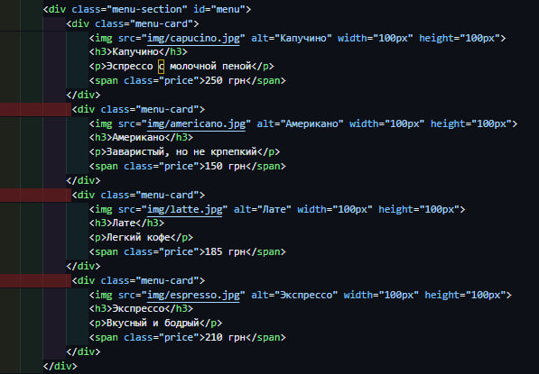
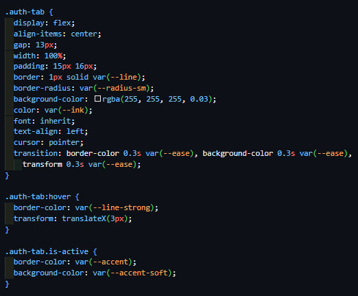
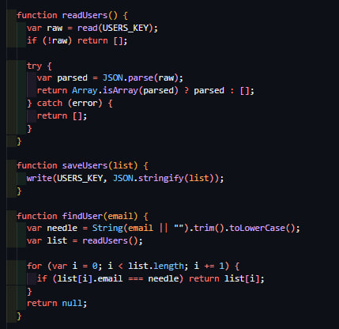
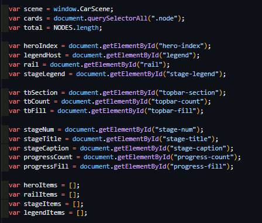

> Hei, jer er
Ruslan
Frontend-utvikler(elev)
Jeg lager moderne, responsive og brukervennlige nettsider
med HTML, CSS og JavaScript
> Hei, jer er
Jeg lager moderne, responsive og brukervennlige nettsider
med HTML, CSS og JavaScript

Jeg har laget en nettside for en kafé. Først planla jeg hvordan siden skulle se ut, og valgte farger og bilder som passer til en koselig kafé. Deretter skrev jeg tekstene til siden, for eksempel «Om oss», menyen og åpningstidene. På nettsiden la jeg inn en meny med bilder og priser, og en side med adresse og kontaktinformasjon.

Jeg har laget en nettside for en bil. Først planla jeg hvordan siden skulle se ut, og valgte farger og bilder som passer til en moderne bil. Deretter skrev jeg tekstene til siden, for eksempel «Om bilen», tekniske data og pris. På nettsiden la jeg inn et bildegalleri, en liste med egenskaper som motor, forbruk og farge, og et skjema for å kontakte selgeren.

Jeg har laget en registreringsside for en nettside. Først planla jeg hvordan siden skulle se ut, og valgte enkle farger og tydelige knapper. Deretter skrev jeg tekstene til siden, for eksempel «Registrer deg», «Passord» og «Logg inn». På siden laget jeg et skjema med felt for navn, e-post og passord. Jeg la også til en knapp for å sende inn skjemaet.

Jeg har laget en nettside med min egen CV. Først planla jeg hvordan siden skulle se ut, og valgte rolige farger og en ryddig struktur. Deretter skrev jeg tekstene til siden, for eksempel «Om meg», «Utdanning», «Erfaring» og «Ferdigheter». På siden la jeg inn et bilde av meg, en kort presentasjon og en liste med språk og programmer som jeg kan.